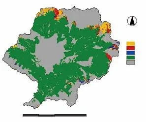
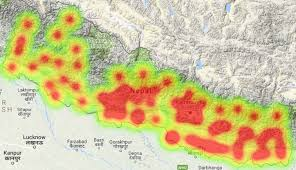
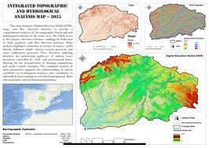

Featured Work
Real academic and personal projects completed at Kathmandu University, Department of Geomatics Engineering.

Mapping the Environment with Engineering Solutions. — My Engineering Portfolio
Welcome to my portfolio! I specialize in geomatics engineering and spatial analysis, turning raw geographic data into
actionable insights.My project work covers the full spectrum of geospatial technologies, including:
Remote Sensing & Earth Observation (Google Earth Engine, Landsat)
Precision Surveying & Topographic Mapping (DGPS, AutoCAD Civil 3D)
Spatial Database Architecture (PostgreSQL, PostGIS)
GIS & Hydrological Analysis (ArcGIS Pro, SRTM DEMs)
UAV Photogrammetry (Agisoft Metashape, Orthophoto generation)
Explore the case studies below to see how I apply spatial SQL, photogrammetry, and terrain analysis to projects across the Kathmandu Valley and beyond.

Replace withproject-cardamom.jpg
(Suitability map from report)
Land Suitability Assessment for Large Cardamom Production — Lamjung District
Evaluated land suitability for large cardamom (Amomum subulatum) cultivation across Lamjung District using GIS integrated with the Analytic Hierarchy Process (AHP). Nine criteria were analysed: elevation, slope, aspect, LULC, temperature, humidity, precipitation, soil pH and soil texture. Results: 0.61% highly suitable, 80.37% moderately suitable, 13.74% marginally suitable, 5.27% not suitable / restricted. Soil texture (22.34%) was the highest-weighted factor. Validated against 5 known cardamom-cultivation localities. Supervised by Er. Anish Bhandari & Er. Namuna Nyaupane.

Replace withproject-thematic.jpg
(One of your 5 thematic maps)
Creating Different Types of Thematic Maps — Nepal
Prepared and interpreted five distinct thematic maps of Nepal using GIS: (1) Heat map of mean temperature, (2) Isotherm map with contour lines, (3) Dot density map of COVID-19 death counts by district, (4) Choropleth map of Kathmandu District population by local administrative units, and (5) Graduated symbol map of coffee production by district. Submitted to Er. Sujan Subedi, Department of Geomatics, KU.

GPS Field Survey and Topographic Mapping — KU Campus
Conducted a differential GPS (DGPS) survey and total-station traverse across the Kathmandu University campus area. Produced a 1:1,000 scale topographic map with 0.5 m contour intervals. Computed land parcel areas using coordinate geometry. Map output delivered in AutoCAD DWG and GeoTIFF formats.

Replace withproject-dem.jpg
(DEM or terrain analysis map)
DEM-Based Terrain and Hydrological Analysis — Bagmati Basin
Used SRTM 30 m Digital Elevation Model data to derive slope, aspect, hillshade and watershed boundaries for the Bagmati River basin. Performed flow accumulation and stream network extraction using ArcGIS Pro Spatial Analyst. Outputs used for flood-risk zone delineation mapping.